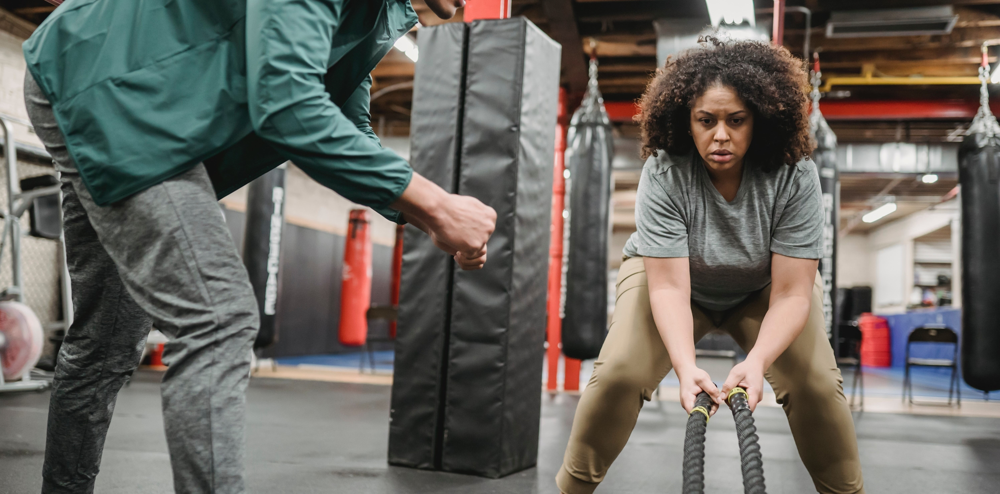

Try keeping your routine in the 10- to 15-minute range when you’re starting out, with 30 to 60 seconds of rest between exercises.
Mountain Climbers
No mountains necessary for this one.
- Start in high plank position, with shoulders over wrists and core tight and activated. You can be on your toes with straight legs or on your knees.
- Draw right knee into chest, then return to high plank with both feet on the floor.
- Repeat with left leg.
- Continue alternating legs as quickly as you can. The faster you go, the more intense the exercise.
High Knees
- Stand with feet hip-width apart and start to run in place. Keep core activated, especially your lower abs, and relax shoulders away from ears.
- Pull right knee up toward chest, then left knee up toward chest
- Continue alternating legs as quickly as possible. Turn up the speed to amplify the workout.
If this feels tough, modify by using your abs to bring your knee toward your chest at a rhythmic pace that feels more accessible.
Burpees
Beloved by high school sports coaches everywhere, this classic move involves your whole body.
- Stand with feet hip-width apart and make sure your core is engaged.
- Jump up, then immediately drop to the floor, placing hands on the floor and shooting feet back so you’re in a high plank position.
- Do a push-up
- Quickly jump feet back to hands and, in one movement, stand and jump up.
Jumping Jacks
We’re assuming you did jumping jacks in elementary school PE, but on the off chance you didn’t, here’s a refresher:
- Stand with feet together, arms relaxed at your sides, and abs engaged.
- Jump legs apart and bring arms out, first to a T shape and then overhead, clapping at the top.
- Keep knees bent as you jump feet back together and bring arms down.
- Repeat as quickly as possible.
Lunges
The basic lunge is a great exercise for building muscles in your legs and getting your heart rate up. Here’s how to do it:
- Stand with feet hip-width apart, core tight, shoulders relaxed, and arms at your sides.
- Step forward with right foot and lower your hips until both knees are bent at roughly a 90-degree angle. Line up right knee directly over right ankle and hover left knee above the floor.
- Keeping the weight in right heel and activating glute muscles, push back to a standing position. Repeat on the left side.
- Repeat this at a steady but quick pace, keeping glutes and core activated.
100-meter Sprints
You don’t have to be an Olympian to do this quick cardio exercise. Plus, sprint training might help improve your overall fitness in a shorter period of time.
- Warm up with something basic (like one of the moves on this list) for 5–10 minutes.
- Start in a runner’s lunge position.
- Launch into a sprint by pushing off the balls of your feet and strongly out of calves and thighs.
- Run as fast as you can (since sprints are so short, the idea is to push yourself as hard as you can).
- Take as long a break as feels good.
- Repeat (you’ll find 3 or 4 hard sprints will be more than enough to get you sweating).
Inchworm
- Stand with feet hip-width apart and core tight.
- Hinge at your waist and place hands on the floor in front of feet.
- Walk hands forward while keeping legs straight (don’t bend your knees!).
- You’ll end up in a high plank position, with your body parallel to the floor.
- Quickly walk hands back toward feet and stand up. Repeat.
Note: The quicker you go, the more cardio you’ll get. Don’t sacrifice form for speed, though! Keep your abs tight, your shoulders away from your ears, and your muscles activated.
Jog for 30 minutes
If a 30-minute run sounds daunting, keep in mind that you can jog as slow as you need. A general rule of thumb is that softer surfaces (like grass and sand) are easier on your joints but harder on your muscles, while asphalt and concrete are a little harder on your joints but easier on your muscles.
- Keep your shoulders back.
- Keep your toes pointing forward with your stride.
- Breathe in through your nose and out through your mouth.
- If you’re too out of breath for that, slow your pace. (You should be breathing steadily enough to be able to loosely sing “Happy Birthday.”)
- Take walk breaks as needed.
Run Stairs
Running outside on a public set of stairs will provide a little more room and might make you more comfortable, but you can also race up and down the stairs in your house or apartment building. The more stairs, the better, but if it’s a short set, you can just do more reps.
- Start with a 10- to 15-minute warmup jog at your own pace.
- Time yourself to run the stairs for 2 continuous minutes, then take a 1-minute break. Repeat.
- Do a total of five 2-minute sets.
Jump Rope
There’s a reason boxers start their workouts by jumping rope: It’s a killer endurance exercise! And even though this workout technically requires “equipment,” you can easily order a jump rope on Amazon for less than 10 bucks.
- Stand with your shoulders relaxed and your feet hip-width apart.
- Keep your elbows close to your rib cage and hold the handles of your jump rope without choking up.
- Keep your jump low (this isn’t box jumping) and remind yourself to be light, allowing your ankles, knees, and hips to flex on each landing.
- Try jumping for 5 minutes at a time, resting for a minute or two, and then jumping for another 5 minutes.
Swim
You don’t have to be Michael Phelps to get a good pool workout. Whether you’re doing laps or just treading water (which is totally considered cardio too!), an aquatic cardio sesh is easy on your joints and works a ton of muscles in your body.
- Strong swimmer? Do laps for 20 minutes at a time, taking breaks in between.
- New to the pool? Try a couple of laps, and then take 2-minute breaks, treading water to recalibrate.
Indoor Cycling Workout
Indoor cycling bikes provide low impact, high intensity workouts (without the fear of a car swerving into your path!). If you have access to a Peloton bike, you can choose from a list of guided workouts of different intensity levels.
For a DIY cycling workout, start with 20 minutes at a moderate intensity level (this is the amount of resistance programmed into the pedals). This will likely be enough to break a sweat, but if you want more, play around with more resistance or a longer duration
Rowing Machine
Perhaps the most underrated machine in the gym, the rower is a total-body workout that gives you a blast of cardio while working your core, butt, legs, and arms all at once (86 percent of your muscles!).
- The movement goes legs, then core, then arms, and the return is arms, then core, then legs.
- Keep your shoulders away from your ears.
- The quicker and more explosive your movements, the more intense your cardio workout will be.
Boxing
Whether you’re shadowboxing at home (punching an invisible enemy, perhaps) or getting into the ring in a boxing gym, this high intensity cardio exercise can transform your body, sharpen your mind, and leave you drenched in sweat.
Following a boxing workout program, whether at home or in a class at the gym, will teach you proper form for stances and punches. Boxing typically also involves a jump rope warmup, so get ready to be a little out of breath.
Jumping Lunge
This explosive move strengthens your legs and will leave even the fittest among us sweaty and out of breath, especially if you’re doing ’em right. Here’s how it goes:
- Stand with feet hip-width apart and abs engaged (flex!).
- Keeping arms relaxed at your sides, take a big step forward with right leg and shift your weight forward so right heel touches the floor first.
- Lower your body until right leg is parallel to the floor and knee is lined up over ankle (think: 90-degree angle).
- Now, jump! Jump up, quickly switching the position of your feet in midair to bring left leg forward and right leg behind you.
- To help with this ninja-like jump switch, use your arms to help propel you into the air while you jump.
- Land as gently as you can in a basic lunge position with left leg forward and right leg back.
- Repeat this jump-switching continuously for 1 minute or longer.
Bodyweight HIIT circuit workout
Perform each move below for 30 seconds, with 10 seconds of rest between moves. Once you’ve made it through all six, rest for 45 seconds. That’s 1 circuit. Repeat everything for a total of 6 circuits.
- Jump rope
- Push-ups
- High jumps
- Mountain climbers
- High-to-low planks: Start in high plank position. Lower one forearm at a time into low plank position. One hand at a time, push back up into high plank. Continue alternating.
- Lateral burpees: Do a regular burpee by squatting, jumping feet back, doing a push-up, and hopping feet back to hands. Then jump up and to the right while clapping your hands overhead. Do another burpee, this time jumping up and to the left. Continue alternating.
15-minute HIIT workout
This workout is a little bit like AMRAP from CrossFit (that means “as many reps as possible”). Go through the list of moves, doing all your reps as quickly as you can, and then start over. Repeat until the 15-minute timer is up.
- Explosive sumo squat: 12 reps
- Tap-up: 12 reps
- Power thrust: 12 reps
- Plank pike: 12 reps
- Laterals: 12 reps
- Single-arm iso hold: 3 reps per side
- Tuck jump: 12 reps